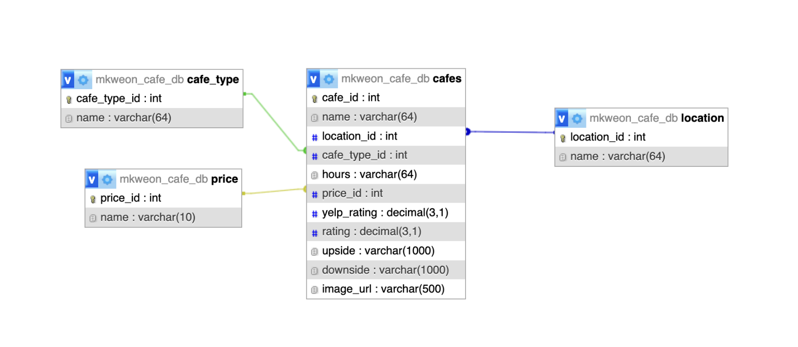

This website allows users to discover and review cafes in Los Angeles. Users can search for cafes in the area as well as track the ones they've visited and log their experiences. It is intended for various audiences such as cafe hoppers and coffee enthusiasts, including students and remote workers, looking for a social or cozy enviornment to work or enjoy a drink.
There are three main pages for this website. The first page is the discover section where users can search new cafes based on the name, cafe type (study, aesthetic, late night, taste, etc), and location of the LA area (Koreatown, DTLA, etc). It does not display cafes they have already been to. It will display the cafe as well as some info about it such as price and hours. The hops page allow them to track the cafes they have been to by adding and deleting items. It only shows the ones they have ranked. They can also filter them based on location and cafe type. Lastly, the add/edit pages allow them to input information about a cafe they went to. It will have details about the cafe (their review) and be added to their list.
The source of the data is through my SQL database which includes some pre-stored cafes as well as cafes that the user will input/generate themselves. It storse information about cafes in LA such as their names, locations, cafe type, and its features.
Database Diagram:
The three extras I used for the project are Responsive Web Design, Pagination, and SQL aggregate function. THe responsive web design was implemented through using CSS framework Bootstrap. Pagination was used on the discover page where it only displays six cafes per page. I used the RAND() function with ORDER BY clause to display cafes in random order everytime user clicks on the discover button. Bootstrap was used as the primary CSS framework for the main design of the project. It is used for the navbar and main pages styling such as fonts, formatting, and spacing.